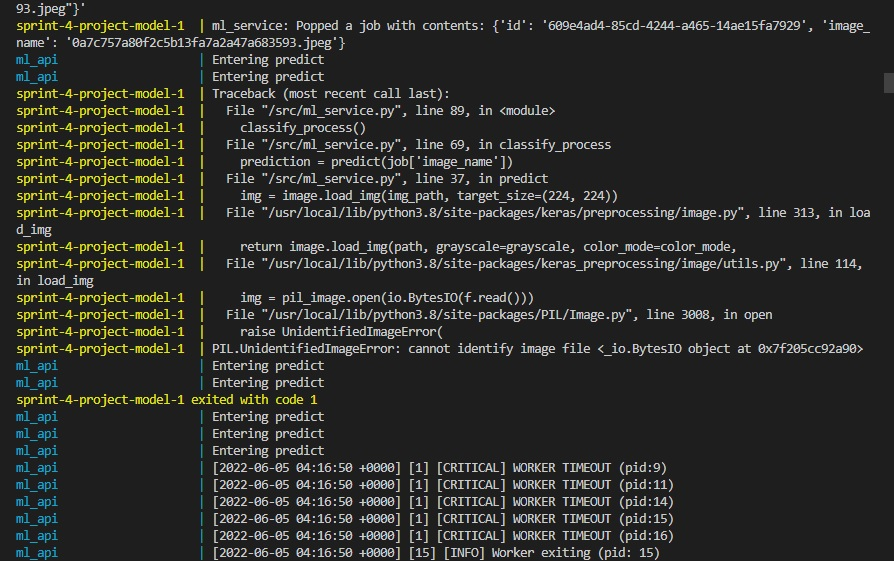
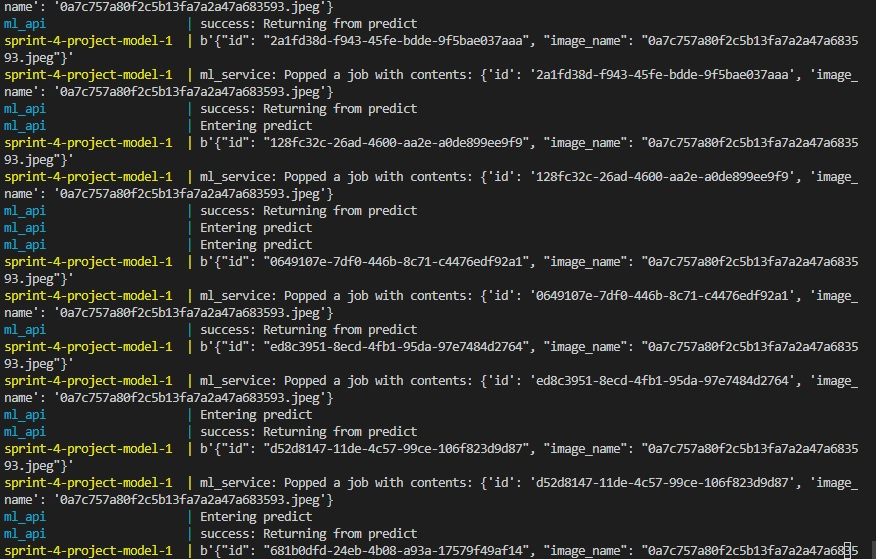
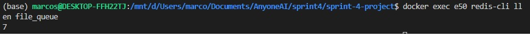
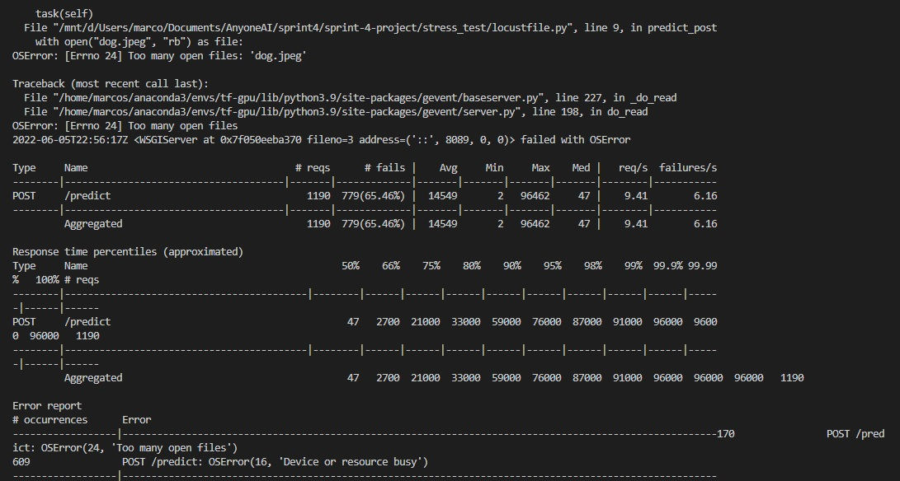
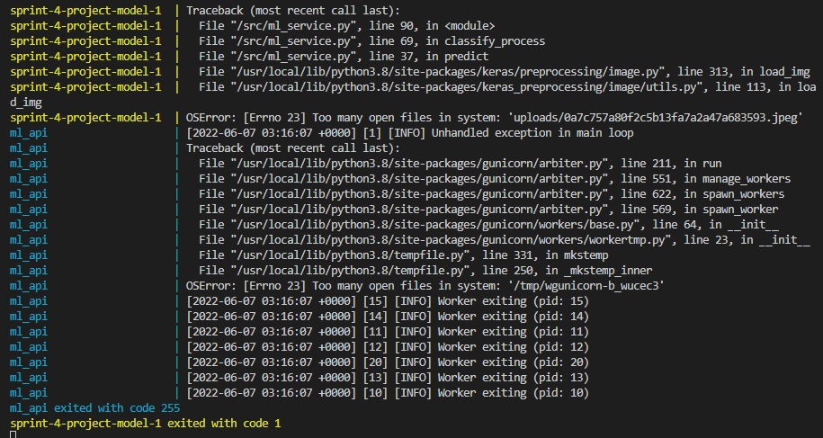

First a simple test was made using only the '/predict' endpoint and invoking only 10 users.
As it can be seen, the server stops responding after 2 minutes.
Taking a look at the logs, it is evident that the error that caused the server to stop was a corrupted image file, caused by concurrent writes and reads.
The problem is fixed by first checking if the file already exists, everytime a file is intended to be created.
Testing with the same conditions as before, a better result is yield.
A normal behaviour is seen and no errors are reported.
The CLI yields the logs of the normal procedure of the containers processing the images.
As it can be seen, the queue size keeps in 7, even after long periods of time, which indicates that the jobs are not being continously accumulated into the queue.
Taking the test further in terms of stress, a new one is carried on with 1000 users and ramp up of 10 per second.
After a couple minutes locust starts to fail. The service keeps processing request with no problems though
As it can be seen, the locust client is not able to open any more files to send to the server. Its an OS limitation
The open files limitation is solved by editing /etc/security/limits.config in the host. The tests are run again.
The request start to fail again after a while.
As can be seen, now the locust client doesnt fail, but the server does. The cause is the same as before, open file limits but in the server this time.